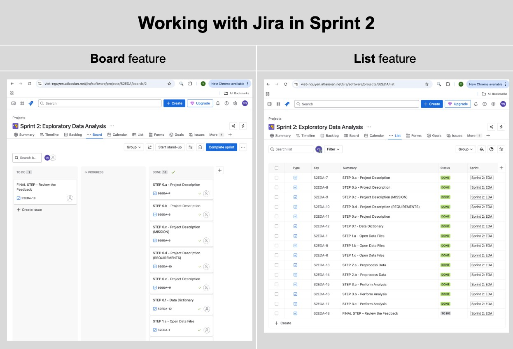
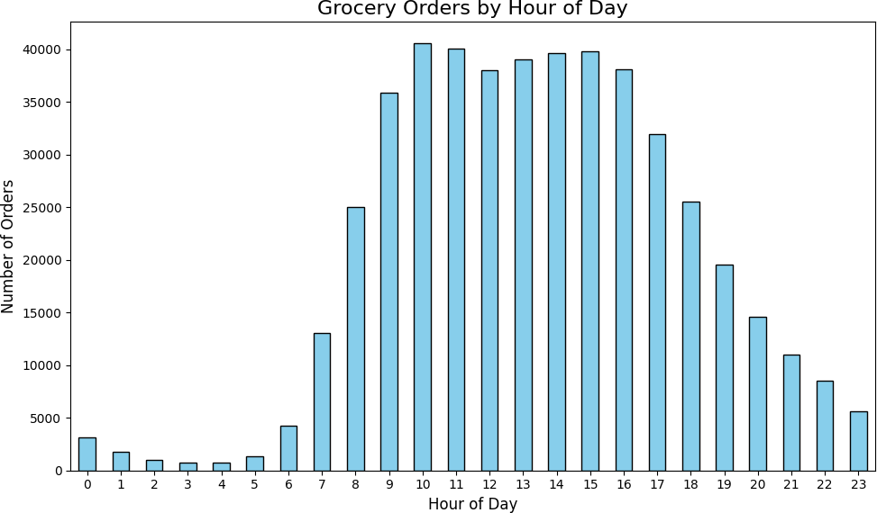
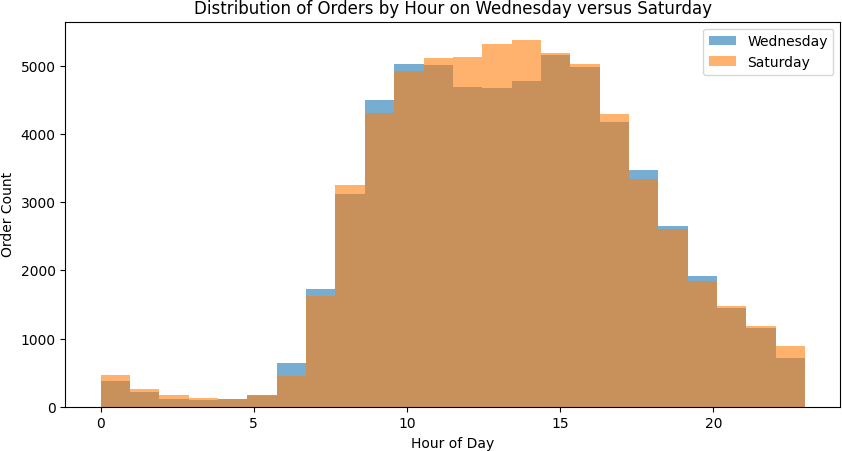
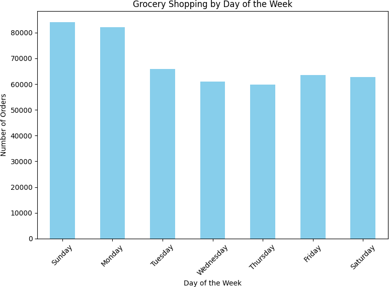
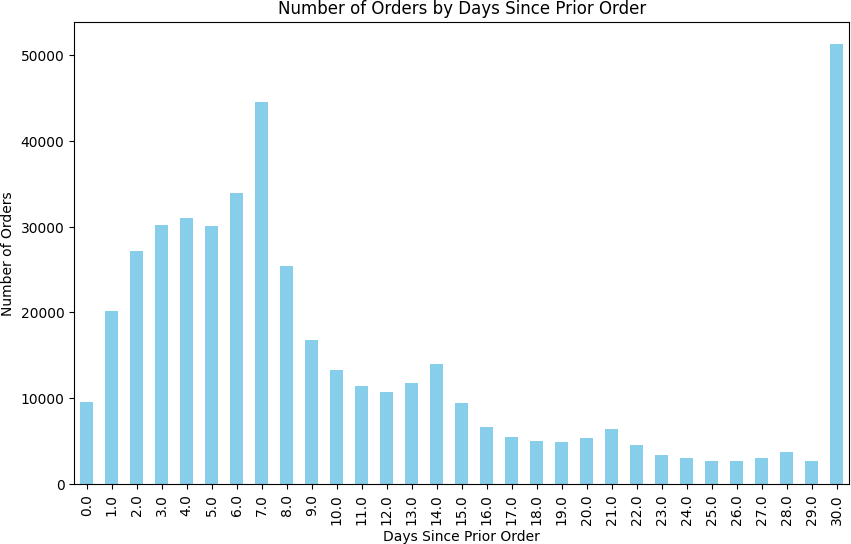

At a Glance
- Cleaned and analyzed 4.5M Instacart orders from over 206,000 real customers
- Surfaced peak shopping windows, weekly reorder patterns, and top-selling items per customer
- Python, Pandas, Matplotlib, Jupyter, EDA

Problem
A grocery delivery platform with 206,000 customers and 4.5 million order-product records cannot improve what it does not understand. Instacart's core business question — what do customers buy, when, and how often — sounds simple until the raw data reveals three distinct quality problems that must be resolved before any analysis is trustworthy. Missing values, implicit duplicates, and inconsistent representations of the same logical concept each require a different fix, and applying the wrong fix introduces bias into every downstream conclusion. The real challenge of this project is not generating interesting charts — it is building the discipline to clean data systematically before a single finding is surfaced. Getting that discipline right on a real-world dataset at scale is what separates exploratory work that informs decisions from exploratory work that misleads them.
Solution
This project worked through Instacart's publicly released 2017 Kaggle dataset — five interrelated CSV files totaling 4.5 million order-product records — following a full EDA workflow: load, inspect, preprocess, analyze, and visualize. Three preprocessing issues were identified and resolved before analysis began, each addressed with a documented rationale rather than a default fix. The behavioral analysis that followed surfaced concrete, actionable patterns: peak shopping hours cluster around late morning and early afternoon, weekly reorder rhythms concentrate on Sunday and Monday, and the most reordered items (bananas, strawberries, baby spinach) reveal a consistent preference for fresh produce over packaged goods. Understanding the customer's shopping cadence and product preferences gives Instacart's product and merchandising teams a foundation for personalization, inventory planning, and promotional timing. Treating the dataset as a business problem rather than a technical exercise shaped every decision — from which columns to inspect first to which visualizations would be most useful to a non-technical stakeholder.
Skills Acquired
- Python — the implementation language for all five phases of the project: data loading, inspection, preprocessing, behavioral analysis, and visualization.
- Pandas — the primary data manipulation library. Five separate CSV files were loaded, inspected for quality issues, merged on shared keys, and analyzed as a unified dataset. Pandas was used for missing value detection, deduplication, column-level filtering, groupby aggregations, and value counts that produced every behavioral finding in the project.
- Matplotlib — used to produce bar charts and histograms visualizing order frequency by hour of day, day of week, and days-since-prior-order, and to surface the top reordered products. Clean, readable charts that can be presented to a non-technical audience are an explicit deliverable of the EDA workflow.
- Jupyter — the development environment that combined executable Python code with markdown narrative, making the full analysis reproducible and self-documenting. Jupyter's cell-by-cell structure mirrors the step-by-step EDA methodology.
- EDA (Exploratory Data Analysis) — the structured methodology applied throughout: inspect every column, identify data quality issues, resolve them with documented reasoning, then generate and test questions against the cleaned data. EDA is not a single technique but a discipline — the outputs are only as reliable as the preprocessing that precedes them.
What that discipline actually looks like in practice — and what the data revealed once it was trustworthy — is what the rest of this writeup covers.
Deep Dive
Bananas. The single most reordered grocery item in the Instacart dataset — 557,763 reorders across 206,209 customers. Not protein powder, not premium coffee, not organic kale. Bananas. And the data makes the pattern impossible to ignore once you start looking.
This project was my first real encounter with messy, real-world data at scale. Five CSV files, 4.5 million order-product records, and a mandate to clean everything before drawing a single conclusion. The kind of work that separates someone who can run a notebook from someone who can actually trust their results.
Why This Project?
Sprint 2 introduced two skills that underpin everything else in data science: cleaning data you didn't collect and asking the right question before touching the analysis. The Instacart dataset is large enough that lazy preprocessing produces subtly wrong results — and small enough that careful work is actually feasible.
The business framing mattered too. Instacart's goal isn't to run notebooks — it's to increase revenue. Every question I asked (when do people shop, what do they reorder, how long between orders) maps to something a product or operations team would genuinely act on: push notification timing, personalized reorder reminders, inventory optimization.
What I Learned
This was my first time managing project workflow with Jira — using board and list views
to track each step. I also used groupby(), duplicated(),
drop_duplicates(), unique(), and nunique()
in anger for the first time. The discipline of loading libraries and datasets only once,
structuring notebooks into logical sections, and commenting every analytical decision
came from code review feedback in this sprint.

Jira Board & List views used to track each sprint step from data loading through final feedback.
The Datasets
Five CSV files from Instacart's 2017 Kaggle release. Together they describe what customers ordered, when, and in what sequence — at a scale that forces systematic preprocessing.
| Dataset | Rows | Columns | Key Fields |
|---|---|---|---|
| instacart_orders | 478,967 | 6 | order_id, user_id, order_dow, order_hour_of_day, days_since_prior_order |
| products | 49,694 | 4 | product_id, product_name, aisle_id, department_id |
| order_products | 4,545,007 | 4 | order_id, product_id, add_to_cart_order, reordered |
| aisles | 134 | 2 | aisle_id, aisle |
| departments | 21 | 2 | department_id, department |
Project Initialization
My first pass at this cell loaded every CSV twice — once into named variables
(df_orders, df_products, etc.) and again inside a
file_paths dictionary used to loop info() summaries for each
table. The reviewer caught it immediately: reading a 4.5-million-row file from disk twice
is wasteful, and it's easy to lose track of which variable is the "real" one. The fix
was to load each dataset exactly once and build the summary loop from the DataFrames
already sitting in memory, not from a second disk read.
# Upload Libraries import pandas as pd import matplotlib.pyplot as plt from IPython.core.display import display, HTML # Upload Datasets — each file is read from disk exactly once df_orders = pd.read_csv('/datasets/instacart_orders.csv', sep=';') df_products = pd.read_csv('/datasets/products.csv', sep=';') df_aisles = pd.read_csv('/datasets/aisles.csv', sep=';') df_departments = pd.read_csv('/datasets/departments.csv', sep=';') df_order_products = pd.read_csv('/datasets/order_products.csv', sep=';') # Reuse the already-loaded DataFrames (no re-reading from disk) to loop the info() summary dfs = { "Orders": df_orders, "Products": df_products, "Aisles": df_aisles, "Departments": df_departments, "Order_Products": df_order_products } for name, df in dfs.items(): print(f"Dataset: {name}") df.info(show_counts=True) print("\n" * 2)
Phase 1 — Data Preprocessing
Before any analysis, every table needed to pass a two-part check: no duplicate rows, no unexpected missing values. The results were more interesting than a clean dataset would suggest.
Orders Table
15 Duplicate Rows Removed
The orders table contained 15 fully duplicate rows — same order ID, same user, same
timestamp. After drop_duplicates(), a double-check with
duplicated().any() confirmed the table was clean. The
days_since_prior_order column had 28,819 nulls, all correctly corresponding
to first-time orders where no prior order exists.
Products Table
1,258 Missing Product Names → Filled with "Unknown"
All 1,258 missing product names mapped exclusively to aisle_id = 100 and
department_id = 21 — both labeled "missing" in their respective lookup
tables. This wasn't data entry noise; it was a structural pattern in how Instacart
handled unclassified items. The right call was filling with 'Unknown'
rather than dropping rows, preserving the order-product relationships downstream.
Duplicate product names also appeared — 1,465 rows with names that matched another
row after lowercasing. These were kept because they had distinct product_id
values, indicating genuinely different SKUs with similar names (e.g., store-brand
vs. name-brand variants).
Order Products Table
836 Missing Cart Position Values — Left as NaN
The add_to_cart_order column had 836 missing values. Investigating the
affected orders revealed they all contained 65 or more items — the
minimum affected order had 65 items, the maximum had 127. The most plausible explanation:
Instacart's system only tracked cart-add position up to a certain threshold. Filling
with a sentinel value like 999 would pollute any cart-position analysis; leaving the
nulls preserves analytical integrity.
# Verify all missing cart positions come from large orders orders_with_missing = df_order_products.loc[ df_order_products['add_to_cart_order'].isna(), 'order_id' ].unique() order_counts = df_order_products['order_id'].value_counts() missing_order_counts = order_counts.loc[orders_with_missing] # All affected orders have > 64 items — confirmed print((missing_order_counts > 64).all()) # True print(missing_order_counts.min()) # 65
Phase 2 — Behavioral Analysis
With clean data, four core questions drove the analysis — each with a direct business application for Instacart's product and ops teams.
Question A
When Do People Shop?
Orders concentrated heavily between 9 AM and 4 PM, peaking at 10 AM with 40,578 orders. The pre-dawn hours (2–4 AM) saw fewer than 1,000 orders each. Wednesday and Saturday showed nearly identical hourly distributions — both peak between the 9th and 17th hours, with the busiest single hour exceeding 5,000 orders.
| Hour | Orders | Hour | Orders |
|---|---|---|---|
| 6 AM | 4,215 | 12 PM | 38,034 |
| 7 AM | 13,043 | 1 PM | 39,007 |
| 8 AM | 25,024 | 2 PM | 39,631 |
| 9 AM | 35,896 | 3 PM | 39,789 |
| 10 AM | 40,578 | 4 PM | 38,112 |
| 11 AM | 40,032 | 5 PM | 31,930 |

Orders by hour of day — peak volume concentrates between 10 AM and 4 PM · generated with Python (Matplotlib)
⚡ Try It — Interactive Chart

Wednesday vs Saturday hourly distributions — nearly identical shapes, both peaking mid-morning · generated with Python (Matplotlib)
⚡ Try It — Interactive Chart
Question B
What Day Do People Shop Most?
Sunday and Monday drove the highest order volumes — 84,090 and 82,185 orders respectively. Mid-week (Wednesday–Thursday) was consistently the slowest, with Thursday seeing only 59,810 orders. This bimodal weekly pattern — heavy at the start, lighter mid-week, recovering toward the weekend — suggests Instacart users plan grocery orders around their weekly routines rather than shopping spontaneously.
| Day | Orders |
|---|---|
| Sunday | 84,090 |
| Monday | 82,185 |
| Tuesday | 65,833 |
| Wednesday | 60,897 |
| Thursday | 59,810 |
| Friday | 63,488 |
| Saturday | 62,649 |

Sunday and Monday lead order volume; mid-week (Wednesday–Thursday) is slowest · generated with Python (Matplotlib)
⚡ Try It — Interactive Chart
Question C
How Long Between Orders?
Two spikes dominated the reorder gap distribution: 7 days (44,577 orders) and 30 days (51,337 orders — the single largest bucket). Weekly shoppers and monthly shoppers are clearly distinct behavioral segments. The days between these spikes showed steady decline, suggesting most users commit to a cadence rather than ordering ad hoc.
The practical implication: push notification timing and email reminders should be calibrated to these two rhythms. A generic "you haven't ordered in a while" message at day 14 misses both peaks.

Reorder gap distribution — two clear spikes at 7 days (weekly shoppers) and 30 days (monthly shoppers) · generated with Python (Matplotlib)
⚡ Try It — Interactive Chart
Question D
Top Reordered Products
Merging the order_products and products tables, then aggregating by product_id
on reordered = 1, surfaced the top 20 most-reordered items. The list is
almost entirely fresh produce — a signal that Instacart's stickiest customers are buying
perishables on a schedule, not stocking up on pantry goods.
| Rank | Product | Product ID | Reorders |
|---|---|---|---|
| 1 | Banana | 24852 | 557,763 |
| 2 | Bag of Organic Bananas | 13176 | 444,450 |
| 3 | Organic Strawberries | 21137 | 286,239 |
| 4 | Organic Baby Spinach | 21903 | 262,233 |
| 5 | Organic Hass Avocado | 47209 | 236,229 |
| 6 | Organic Avocado | 47766 | 187,743 |
| 7 | Organic Whole Milk | 27845 | 162,251 |
| 8 | Large Lemon | 47626 | 150,244 |
| 9 | Organic Raspberries | 27966 | 147,248 |
| 10 | Strawberries | 16797 | 139,245 |
⚡ Try It — Interactive Chart
Key Takeaways
- Peak shopping is 9 AM–4 PM. Order volume drops sharply after 5 PM and stays below 10,000 from 9 PM–6 AM. Scheduling promotions or push notifications outside these hours means reaching users at low-intent moments.
- Sunday and Monday are the heavy shopping days. A product or growth team optimizing delivery capacity or promotional spend should weight these two days disproportionately.
- Two distinct reorder segments: weekly and monthly. The 7-day and 30-day spikes are not noise — they represent separable customer cohorts with different loyalty and retention dynamics.
- Fresh produce dominates reorders. All top 10 reordered items are produce. Instacart's most engaged customers are building a weekly fresh-produce habit, not stocking pantries.
- Missing data isn't always random. Both the 1,258 missing product names and the 836 missing cart positions had structural causes identifiable from the data itself. Treating them as random errors would have been wrong.
Conclusion & Reflections
This project confirmed something that's easy to underestimate early in a data career: preprocessing isn't setup — it's analysis. The decisions I made about how to handle missing product names, duplicate orders, and structural nulls in the cart position column directly shaped every conclusion downstream. Getting those decisions wrong wouldn't have produced obvious errors; it would have produced subtly biased results that looked fine.
The behavioral patterns themselves were clear and actionable. But the harder skill — knowing why data is missing before deciding what to do about it — is what made the analysis trustworthy.
Growth into Sprint 3+
Sprint 2 built the preprocessing habits that every subsequent project depended on. By Sprint 6 (Video Game Sales), I was handling missing scores and platform lifecycles with the same systematic approach. By Sprint 9 (Churn Prediction), the same discipline applied to feature engineering and class imbalance. The fundamentals compound.
| Project Requirement | Status |
|---|---|
| Libraries and datasets loaded once at notebook start | DONE ✓ |
| Duplicate rows found and removed in all 5 tables | DONE — 15 duplicate orders removed ✓ |
| Missing values identified and handled with justification | DONE — 1,258 product names, 836 cart positions ✓ |
| [A] Easy: hour/day/reorder-gap analyses with visualizations | DONE — bar charts for all three ✓ |
| [B] Medium: Wed vs Sat histogram, orders/customer, top 20 products | DONE ✓ |
| [C] Hard: order size distribution, top 20 reordered items | DONE ✓ |
| Project conclusion with business framing | DONE ✓ |
Want to See the Full Notebook?
The complete code — preprocessing, all visualizations, and behavioral analysis — is on GitHub.